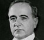

Transforme-se...
Aperfeiçoe-se...
Surpreenda-se...
FaTecCi!
A Faculdade Tecnologia e Cidadania - FaTecCi tem por missão, além de capacitar com excelência os alunos a operarem as mais inovadoras ferramentas
tecnológicas, instigar estes alunos a utilizarem suas habilidades como um meio de interpratação da sociedade em que vivem, em suas relações culturais, sociais e
políticas, contribuindo de maneira científica para o esclarecimento sobre determinada realidade social.
Nossos alunos, ao passo em que são atualizados com as mais diversas ferramentas disponíveis no mercado, também são envolvidos em projetos práticos, tendo a oportunidade
de elaborar soluções concretas para problemas reais que dizem respeito a temáticas de interesse social, tais como Gestão de Políticas Públicas, Educação, Transparência,
Acesso à informação e muito mais!
Faculdade Tecnologia e Cidadania - educação a serviço da ampliação da cidadania e do aperfeiçoamento da democracia!
|  | Getúlio Vargas | "A FaTecCi me proporcionou um conhecimento muito amplo e prático na administração e gerência pública, |
| D. Pedro II | "Na FaTecCi aprendi desde teoria política, visitando autores como Aristóteles, Maquiavel e Rousseau, até |
|
| Jheimisson | "Vários UX e start up's, manow!!" |